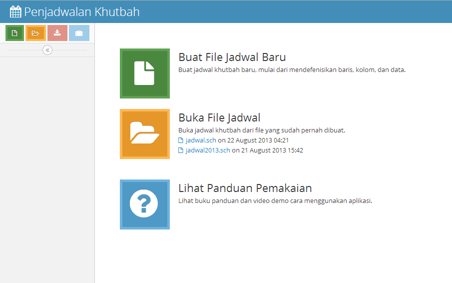

"Khotib Timetable" Documentation by Toni Haryanto v1.0
Khotib Timetable
Created: 22/08/2013
By: Toni Haryanto
Email: toha.samba@gmail.com
A) Sekilas tentang Aplikasi
Khotib Timetable adalah aplikasi yang dibuat khusus untuk memudahkan pembuatan jadwal khotib jumat di suatu daerah. Dengan aplikasi ini Anda dapat mengatur penempatan khotib jum'at di setiap masjid untuk setiap minggunya tanpa memerlukan usaha yang besar untuk mengecek satu per satu penempatan karena khawatir ada jadwal yang bentrok. Bentuk tabel jadwal nantinya seperti ini:
Judul kolom paling atas yang berupa huruf-hufur kapital A, B, C, dst. adalah kode yang mewakili nama masjid. Judul baris di sebelah kiri yang berupa tanggal adalah kode tanggal untuk jadwal khutbah. Terakhir kotak-kotak berisi angka yang mejadi perpotongan judul kolom dan judul baris adalah kode yang mewakili nama khotib. Sebagai contoh, Baris kesatu kolom kesatu berisi kode angka 4 yang berarti khotib dengan kode 4 bertugas mengisi khutbah jumat pada tanggal 18/10/2013 di masjid dengan kode A. Daftar kode masjid dan kode khotib nantinya akan disediakan di bagian lain tabel.
Aplikasi ini dibuat dengan beberapa fitur yang memungkinkan Anda untuk membuat jadwal khotib dengan jumlah kolom, baris dan data sebanyak apapun dengan lebih mudah dibanding bila harus membuat hal serupa menggunakan aplikasi lain seperti aplikasi spreadsheet.
Aplikasi ini berfungsi dengan satu aturan sederhana: tidak ada dua atau lebih kode khotib di baris yang sama, berdasarkan asumsi satu khotib tidak boleh/tidak dapat bertugas di dua masjid di waktu yang sama. Oleh karenanya, kasus-kasus lain yang serupa itu dapat juga dibuat menggunakan aplikasi ini, seperti pembuatan jadwal tugas mengisi pengajian, dan sebagainya.
B) Pengenalan Area Kerja
Ketika pertama kali menjalankan aplikasi, Anda akan menemukan halaman beranda aplikasi yang berisi tiga tombol fungsi utama: Membuat File Baru, Membuka File dan Tombol Panduan.
Tombol besar berwarna hijau dengan gambar kertas adalah tombol yang berfungsi untuk membuat file jadwal baru. Tombol besar berwarna oranye dengan gambar map berkas berfungsi untuk membuka file yang sudah pernah dibuat dan disimpan. Kedua fungsi ini (membuat file baru dan membuka file) juga dapat dijalankan oleh dua tombol kecil pertama yang berada di area sebelah kiri.
Setelah Anda membuka file, maka halaman yang pertama kali ditampilkan adalah halaman tabel jadwal. Bila Anda membuat file baru, jangan kaget karena halaman tabel tidak menampilkan apapun karena Anda belum mendefinisikan kolom dan baris tabelnya.
Sidebar Aplikasi
Di bagian kiri halaman, terdapat 4 tombol utama dan 4 menu utama.
4 tombol utama yang tersedia diantaranya adalah tombol berwarna hijau untuk membuat file baru, tombol berwarna oranye untuk membuka file primari yang pernah disimpan, tombol berwarna merah untuk menyimpan file primari yang sudah dibuat, dan terakhir tombol berwarna biru untuk mengunduh file hasil ekspor data dalam bentuk file Excel.
4 menu utama yaitu menu Tabel Jadwal, Lokasi Khutbah, Tanggal Khutbah, dan Data Khotib. Menu ini digunakan untuk mengakses halaman-halaman yang tersedia pada aplikasi.
Anda dapat memperkecil ukuran (minimized) sidebar agar wilayah kerja utama lebih luas dengan mengklik tombol panah di bagian paling bawah sidebar.
Halaman-halaman Aplikasi
Terdapat 4 halaman yang dapat diakses di dalam aplikasi ini. Selain halaman tabel yang sudah dijelaskan di atas, ada 3 halaman lainnya yang dapat diakses melalui menu di sidebar aplikasi.
Lokasi Khutbah adalah halaman untuk menampilkan dan menambah data lokasi khutbah yang nantinya akan menjadi data kolom pada tabel jadwal.
Tanggal Khutbah adalah halaman untuk menampilkan dan menambah data tanggal khutbah yang nantinya akan menjadi data baris pada tabel jadwal.
Data Khotib adalah halaman untuk menampilkan dan menambah data khotib yang nantinya akan menjadi isi data pada tabel jadwal.
C) Membuat Dokumen Baru
Ada dua cara membuat dokumen baru: dengan mengklik tombol hijau besar di halaman beranda, atau tombol hijau kecil di sidebar. Setelah Anda mengklik tombol tersebut, akan muncul jendela pop-up yang meminta konfirmasi nama file yang akan Anda buat.
Isikan nama file yang Anda inginkan di bagian Nama File kemudian tekan tombol Buat File Baru. Apabila kolom isian Nama File tidak diisi, maka file akan diberi nama default untitled-schedule.sch.
Setelah Anda membuat dokumen, maka akan muncul halaman tabel kosong. Anda harus mendefinisikan daftar kolom, baris dan data khotibnya di halaman masing-masing. Setiap kali Anda menambah data kolom dan baris baru, tabel jadwal di halaman tabel akan otomatis terbentuk dan diperbaharui.
D) Menyimpan Dokumen
Setelah Anda mengisikan data-data di dalam file, Anda dapat menyimpan file yang sudah Anda buat dengan mengklik tombol berwarna merah di sidebar, dan file data primari akan diunduh. Anda dapat menutup file dengan mengklik tombol x di sebelah kanan atas aplikasi langsung tanpa mengunduh terlebih dahulu file primari. File yang sudah pernah dibuat dan dimodifikasi akan otomatis tersimpan di dalam aplikasi dan Anda dapat membukanya sewaktu-waktu. Fitur Unduh Data Primari ini baiknya digunakan apabila jadwal yang Anda buat sudah rampung dan Anda tidak akan mengakses lagi file tersebut dalam waktu lama, sehingga Anda ingin menyimpan file primari ini manakala sewaktu-waktu aplikasi Anda tidak dapat diakses (karena komputer yang rusak, windows corrupt dsb) dan membutuhkan instal ulang aplikasi sehingga data yang ada di dalamnya pun hilang. File primari yang sudah pernah diunduh dapat dibuka kembali pada aplikasi instalasi baru.
E) Membuka Dokumen
File primari yang sudah pernah Anda unduh dan simpan dapat dibuka kembali pada aplikasi ini dengan mengklik tombol berwarna oranye pada sidebar atau tombol oranye besar pada halaman beranda. Ketika tombol ditekan, akan muncul jendela baru unntuk memilih file yang akan dibuka. Pastikan file yang dibuka adalah file primari asli dengan ekstensi .sch.
Anda juga dapat langsung membuka file yang sudah pernah Anda buat dan tersimpan di dalam aplikasi dengan mengklik daftar file di beranda di sebelah tombol oranye besar.
F) Bekerja dengan Dokumen
Telah dijelaskan di bagian sebelumnya bahwa data kolom dan data baris harus didefinisikan terlebih dahulu agar tabel jadwal terbentuk. Selain itu Anda juga harus menyiapkan data khotib yang nantinya akan dimasukkan ke dalam tabel jadwal.
Menambah Data Kolom (Lokasi Khutbah)
Untuk menambahkan data kolom, masuklah terlebih dahulu ke halaman Lokasi Khutbah, kemudian tekan tombol Tambah Kolom di bagian atas halaman. Maka akan muncul halaman form tambah data kolom.
Ada tiga isian di form tambah kolom: Kode Masjid, Nama Masjid, dan Deskripsi Masjid.
Kode Masjid adalah kode yang digunakan untuk mewakili data Lokasi Khutbah di dalam tabel, yang nantinya akan menjadi label kolom pada tabel jadwal. Anda dapat menggunakan huruf, atau kombinasi huruf dan angka untuk kode kolom ini. Pastikan jenis kode masjid ini dibuat berbeda dengan kode khotib nantinya agar pembuatan tabel tidak bingung, misalnya kode masjid dengan huruf, kode khotib dengan angka, atau sebaliknya.
Nama masjid adalah nama untuk masjid sebagai lokasi khutbah.
Deskripsi Masjid adalah isian untuk keterangan lokasi khutbah, misalnya nomor telepon DKM masjid, alamat masjid dsb.
Setelah Anda mengisikan data lokasi khutbah pada form, tekan tombol Simpan untuk menyimpan Data.
Menambah Data Baris (Tanggal Khutbah)
Untuk menambahkan data baris tidak berbeda dengan menambah data kolom, masuklah terlebih dahulu ke halaman Tanggal Khutbah, kemudian tekan tombol Tambah Baris di bagian atas halaman. Maka akan muncul halaman form tambah data baris.
Ada tiga isian di form tambah kolom: Kode Baris, Judul Baris, dan Deskripsi Baris.
Dikarenakan baris pada tabel jadwal hanya merepresentasikan tanggal khutbah, maka data baris ini hanya memerlukan isian Kode Baris yang nantinya akan menjadi judul baris pada tabel jadwal. Meski demikian Anda tetap dapat mengisi Judul Baris dan Deskripsi Baris sesuai keperluan.
Setelah Anda mengisikan data lokasi khutbah pada form, tekan tombol Simpan untuk menyimpan Data.
Menambah Data Khotib
Untuk menambahkan data khotib, masuklah terlebih dahulu ke halaman Data Khotib, kemudian tekan tombol Tambah Data di bagian atas halaman. Maka akan muncul halaman form tambah data khotib.
Ada tiga isian di form tambah kolom: Kode Khotib, Nama Khotib, dan Deskripsi Khotib.
Kode Khotib adalah kode yang digunakan untuk mewakili data khotib yang bertugas mengisi khutbah yang nantinya akan menjadi label sel pada tabel jadwal. Anda dapat menggunakan huruf, atau kombinasi huruf dan angka untuk kode khotib ini. Pastikan jenis kode Khotib ini dibuat berbeda dengan kode khotib nantinya agar pembuatan tabel tidak bingung, misalnya kode Khotib dengan huruf, kode khotib dengan angka, atau sebaliknya.
Isikan nama khotib di form isian Nama Khotib.
Deskripsi khotib adalah isian untuk keterangan khotib, misalnya nomor telepon khotib, alamat khotib dsb.
Setelah Anda mengisikan data khotib pada form, tekan tombol Simpan untuk menyimpan Data.
Memasang dan Menghapus Data Tabel
Setelah semua data kolom, baris dan khatib sudah lengkap, Anda dapat mulai memasukkan data khatib ke dalam tabel jadwal sesuai kebutuhan. Secara default tabel jadwal akan terbentuk dengan sel tabel yang masih kosong.
Untuk memasang data khatib pada tabel, klik sel yang ingin dipasang data sampai sel tersebut berwarna hijau bersamaan dengan aktifnya tombol Pasang Data di bagian atas halaman. Kemudian tekan tombol Pasang Data, maka akan muncul jendela pop-up berisi daftar khatib.
Pada daftar khatib, ada data khatib yang berwarna latar hijau tua dan hijau muda. Warna latar hijau tua menandakan khatib tersebut dapat dipasang pada sel aktif, sedangkan warna latar hijau muda menandakan bahwa khatib tersebut tidak dapat dipilih karena sudah mengisi sel lain pada baris yang sama. Hal ini untuk memastikan Anda tidak memasukkan dua nama khatib pada baris yang sama.
Untuk jumlah kolom dan baris yang sangat banyak akan sangat merepotkan bila Anda harus memasang satu per satu data ke dalam sel. Oleh karenanya, aplikasi ini dilengkapi dengan fitur Generate Data untuk memasang data khatib ke seluruh sel secara random teratur. Anda dapat mengaksesnya langsung melalui tombol Generate Data di bagian atas halaman. Akan muncul jendela konfirmasi yang menyatakan bahwa data yang telah digenerate tidak akan dapat dikembalikan ke susunan data sebelumnya.
Bila Anda hendak membuat perubahan-perubahan kecil pada susunan data sel, Anda dapat menghapus beberapa sel dan memasangnya dengan data yang baru. Untuk menghapus sel, Anda tinggal mengklik terlebih dahulu sel yang ingin dihapus hingga warna sel berubah menjadi oranye, kemudian tekan tombol Hapus Data di bagian atas halaman. Anda dapat mengisi kembali sel yang kosong dengan tombol Pasang Data, seperti dijelaskan di atas.
G) Mengekspor Dokumen ke Excel
Anda dapat mengekspor data tabel jadwal beserta daftar masjid dan khatib ke dalam format excel untuk nantinya Anda cetak ke atas kertas. Untuk mengekspor data, tekan tombol berwarna biru di sidebar, dan aplikasi akan mengunduhkan data Anda ke dalam format xls.
H) Menutup File
Anda dapat menutup aplikasi langsung dengan menekan tombol Close di sudut kanan atas jendela. Data yang sudah dibuat tidak akan hilang. Akan tetapi alangkah baiknya bila Anda menutup terlebih dahulu file yang sedang dibuka, dengan mengklik simbol x di sebelah nama file di bagian kanan atas aplikasi. Hal ini bertujuan untuk membersihkan penggunaan memori sementara pada file.
I) Kerusakan Sistem
Apabila suatu ketika aplikasi tidak dapat dijalankan atau rusak, sedangkan Anda belum menyimpan data primari dari aplikasi tersebut, langkah pengamanan pertama adalah menyelamatkan data dari dalam sistem.
Buka file di tempat Anda mengekstrak aplikasi, kemudian masuk ke folder htdocs/khatib-timetable/app/assets/ kemudian kopikan folder saved beserta seluruh isinya ke tempat lain. Folder tersebut berisi semua file yang pernah dibuat dan disimpan di dalam sistem.
Untuk mengembalikan aplikasi seperti sedia kala, ekstrak kembali semua file aplikasi dari bundel file master yang Anda dapatkan dari kami ke tempat Anda menginstal sebelumnya atau ke tempat lain yang Anda inginkan.
Terima Kasih
Sekali lagi, terima kasih banyak telah membeli aplikasi ini. Saya akan sangat senang sekali membantu Anda apabila di lain waktu Anda menemukan kesulitan atau error pada aplikasi. Permintaan pembuatan aplikasi lain untuk kasus yang lain akan saya tunggu dengan senang hati.
~ Toni Haryanto